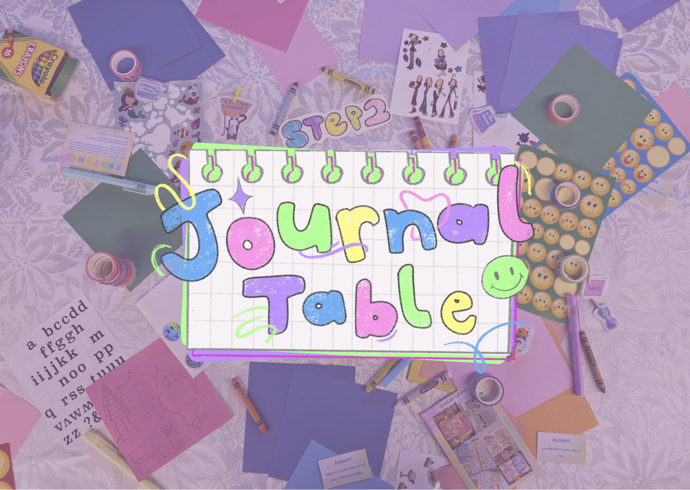
Bringing attention back to tactile creative journaling through a low-pressure, hands-on event
Context
When exploring reflective personal hobbies, I noticed that people tend to gravitate towards digital tools for creation due to their efficiency and accessibility. While analog creative journaling is still present, the shift toward digital practices can reduce the sense of slowness, presence, and personal connection with the process.
To address this, I designed an open, low-effort experience for students to casually explore creative journaling, understanding what it could look like for them personally, and observe how others engage with the pracitce.
Challenge
To make analog creative journaling feel accessible, inviting, and engaging for students who may not usually consider it as a creative practice.
Approach
I designed a low-pressure, open entry experience that removed expectations around skills or outcome. The experience was frames as casual and free to explore, encouraging participation without the fear of doing it 'right'.
Outcome
A low-pressure, open table event that invited students to engage with creative journaling in a casual setting. Participants were able to experiment freely with materials, observe different approaches from others, and experience journaling as a flexible and personal creative practice rather than a structured task. The setup lowered the barrier to participate, helping frame journaling as something approachable and fun.
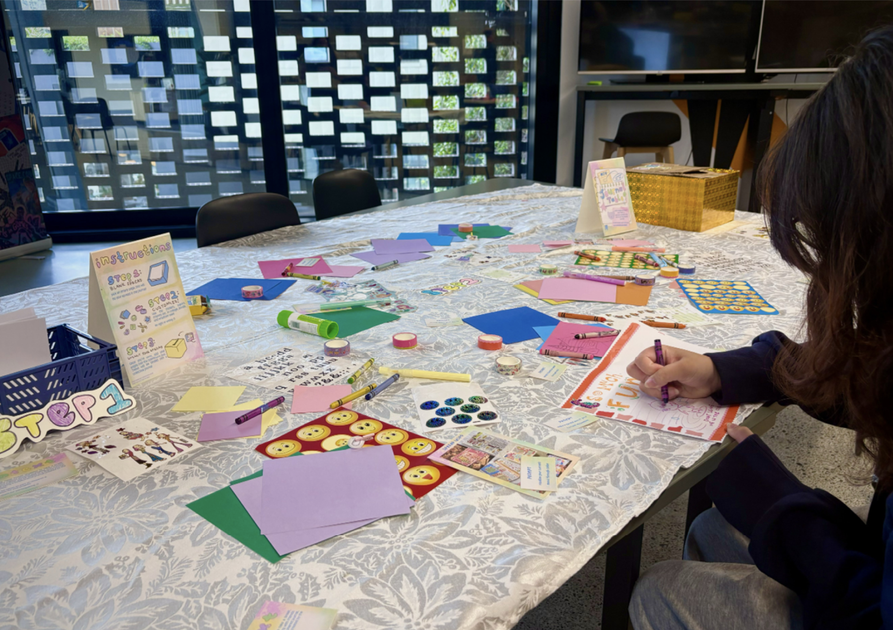
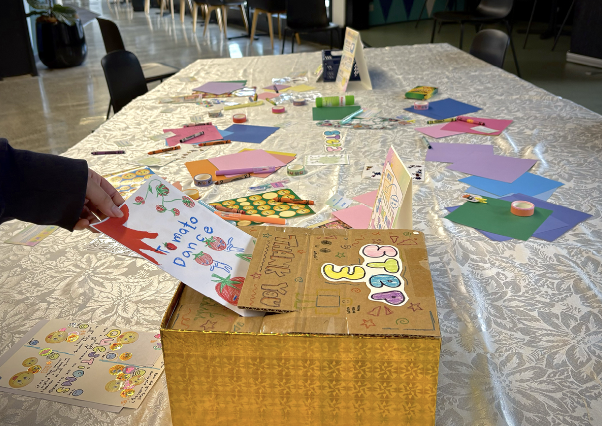
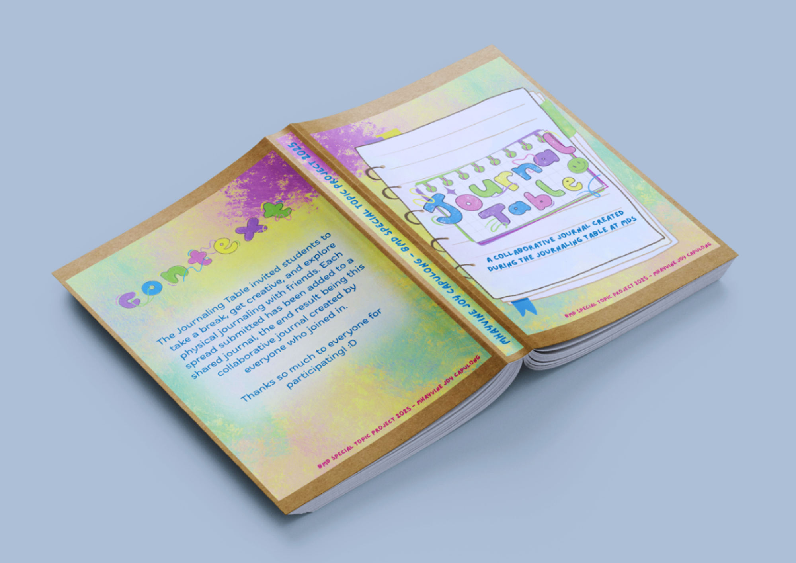
Research & Inspiration
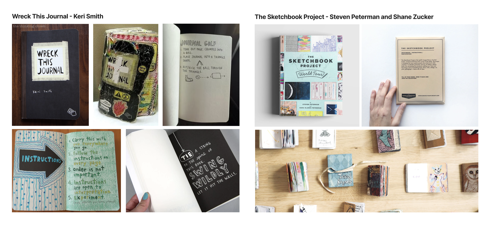
I researched existing creative journal and participatory art projects, particularly 'Wreck This Journal' and 'The Sketchbook Project'. Both encouraged participants to respond to prompts, share their creative approaches, and express their individual styles.
These projects demonstrated how open-ended activities can make creativity feel more accessible and encourage participation without the pressure of making a 'perfect' outcome. They focused more on exploration, and self-expression rather than artistic skills so I took these projects as inspiration moving forward.
User Experiments & Testing
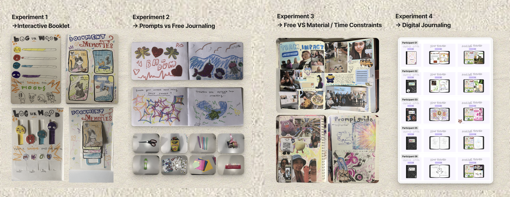
Interactive Booklet
My initial project outcome concept was to encourage participation through an illustrative interactive booklet, but through testing I found that people felt this outcome was too single-use to get them motivated.
Free vs Prompts
Between free journaling and prompt-guided journaling, I was surprised to find that people actually preferred free journaling. This was because they wanted to have full control over what they wanted to create, but they did note that it would be nice to have prompts on the side if they needed it.
Freedom vs Constraints
I did a solo-test with different journaling constraints. I found that the best experience was having a wide range of materials, no time limit, but also having prompts available if ever I got stuck.
Digital Journaling
I also explore how people engaged with digital journaling, and found that participants enjoyed the freedom of creating independantly. Without direct facilitation of observation, they felt more comfortable approaching the activity in ways that reflected their own interests.
Across all experiments, participants valued guidance but did not want to feel restricted. While most participants were comfortable exploring freely, a few showed hesitation when faced with a blank page. This highlights the value of having prompts available to quietly guide starting points, without completely restricting creative freedom.
Event Set Up
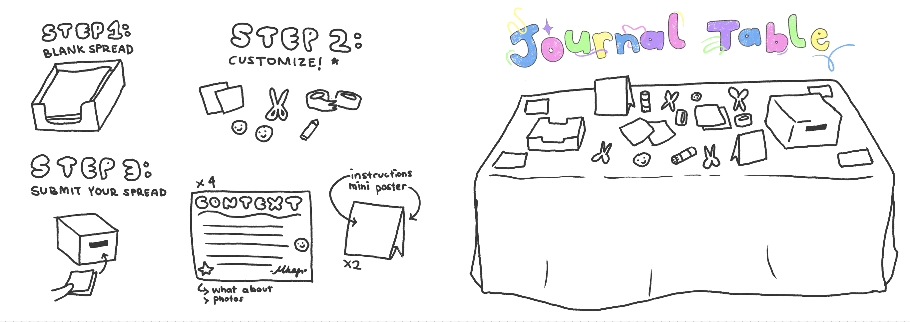
The first step I took in setting up the event was visualising the overall experience, including the table layout, instructions to have on the table for participants, and the materials required.
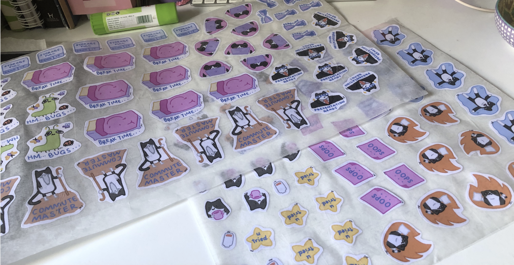
I created a set of university/student-themed stickers for the participants to use. I also collected a range of journaling materials, including coloured paper, stickers, markets, and washi tape.
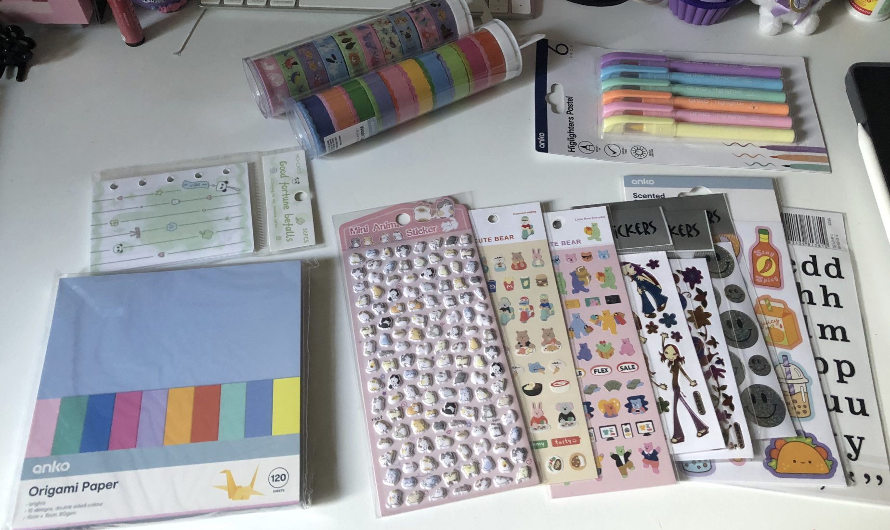
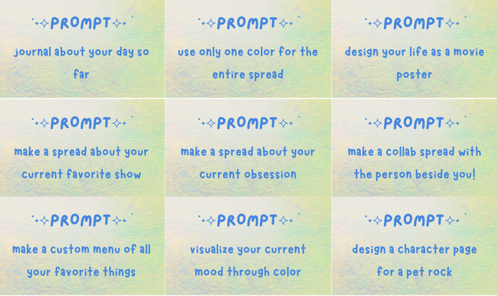
Taking feedback from user testing, I included a set of creative prompts along with spread inspiration cards placed around the table. These were designed to act as a guide for participants who wanted ideas on what to journal or how to approach the layout of their spreads.
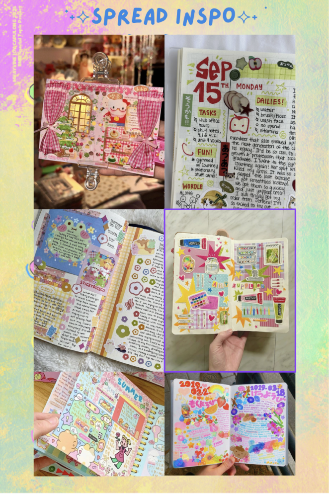
I created post-session reflection cards for the participants, inviting them to add stickers or doodles to represent how they felt and answer the cards. This was used to visually capture and analyse the overall emotional trend response and participant reception of the event.
The questions I asked :
- Do you journal in your free time?
- How did you feel during this activity?
- Do you enjoy creating with others?
- Would you be interested in keeping a physical journal after this?
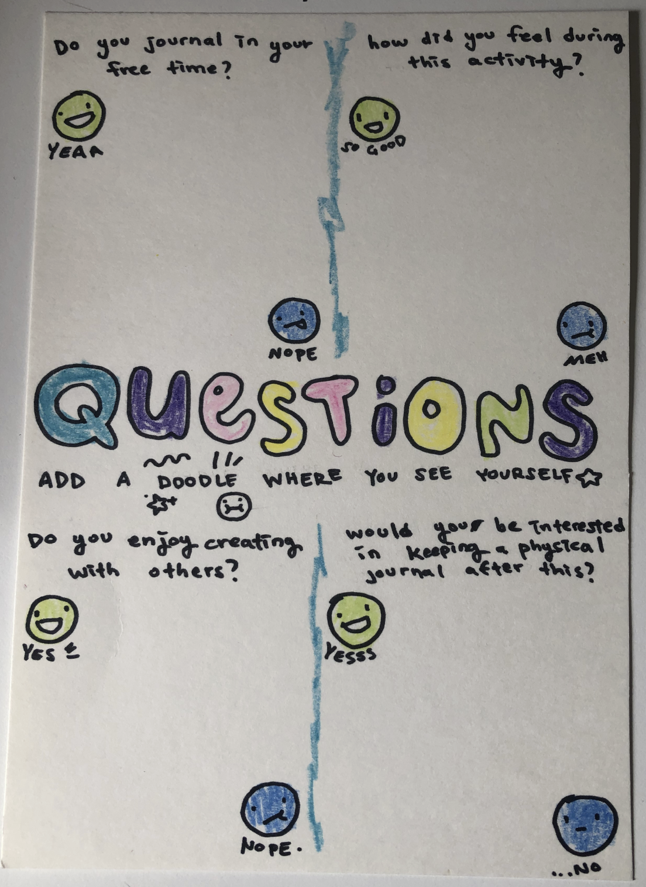
Final outcome
The final outcome was the Journal Table, a two-day interactive event held at Media Design School. Participants were invited to explore creative journaling in a low-pressure, open setting, each contributing their own journal spreads throughout the experience.
After the event, I collected all the submitted spreads and bound them into a final compiled journal, documenting the range of response and creative approached that emerged over the two days.
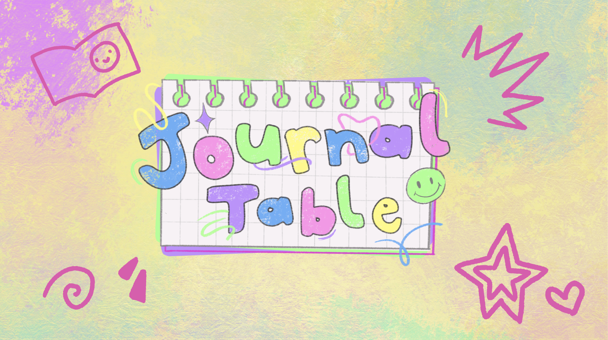

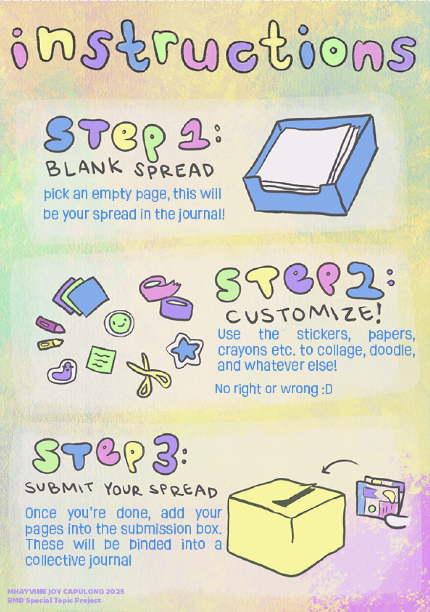
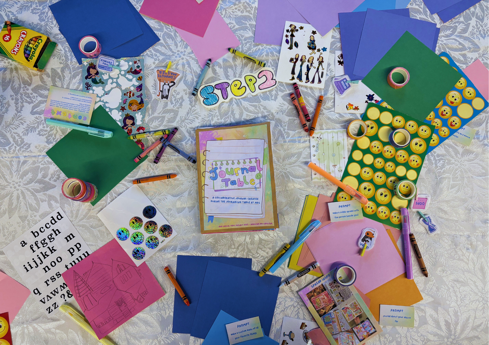
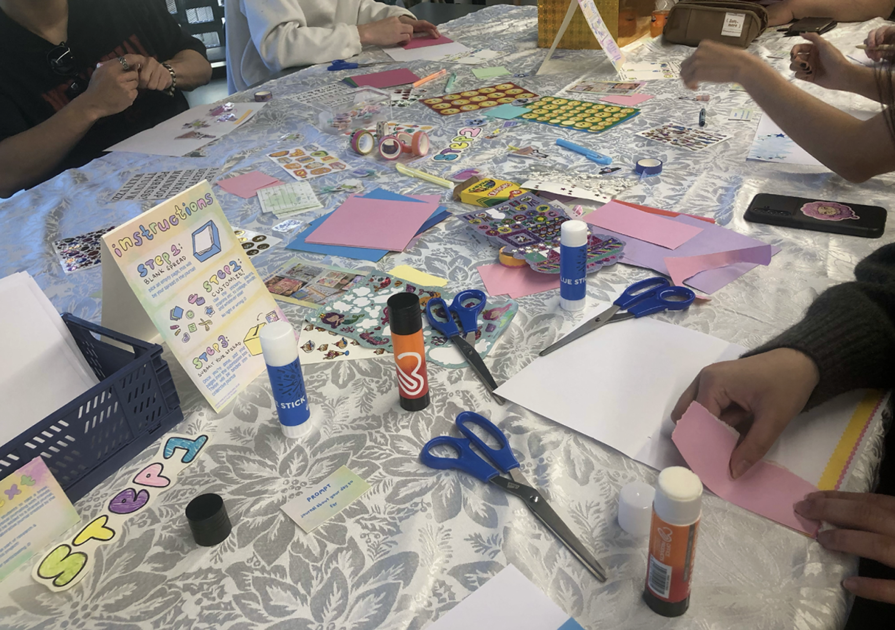
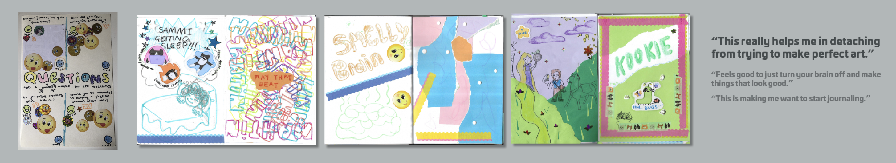
Reflection
This was my first independantly led event. Through testing and iterations, I learned how to refine ideas based on user feedback. I really enjoyed developing the outcome as each experiment progressed and the most valuable part of the process was learning how to continuously improve a concept based on user insights.